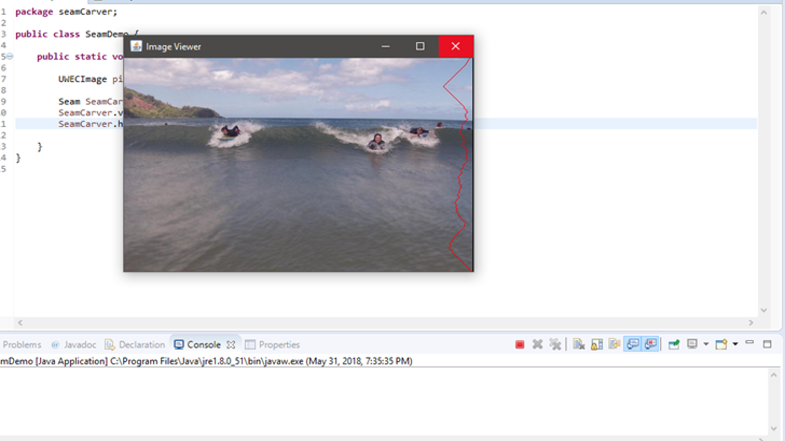

Seam Carver

The Seam Carver is a program I created for my Algorithms course. The program was written in Java and utilizes dynamic programming to shrink an image. The program finds the seam (a column of pixels within the image) with the lowest contrast in pixel color and proceeds to remove the column of pixels. This can be done multiple times to help shrink an image by removing low-contrast space. This algorithm was discovered by Shai Avidan and Ariel Shamir in 2007 and is now a core feature in Adobe Photoshop and other graphics applications.
Tools Used:
- Java
- Dynamic Programming